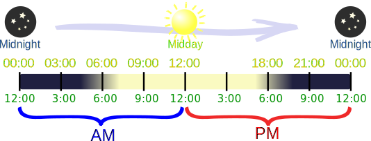

Time - AM/PM vs 24 Hour Clock
Normally time is shown as Hours:Minutes
There are 24 Hours in a Day and 60 Minutes in each Hour.
Example: 10:25 means 10 Hours and 25 Minutes
Showing the Time
There are two main ways to show the time: "24 Hour Clock" or "AM/PM":
- the 12 Hours running from Midnight to Noon (the AM hours), and
- the other 12 Hours running from Noon to Midnight (the PM hours).
Like this (try the slider):

|
AM |
PM |
|---|---|
|
Ante Meridiem* Latin for "before midday" |
Post Meridiem* Latin for "after midday" |
|
Midnight to Noon |
Noon to Midnight |
|
24 Hour: 00:00 to 11:59 |
24 Hour: 12:00 to 23:59 |
*Is that spelled "Meridiem" or "Meridian"? See here.
Converting AM/PM to 24 Hour Clock
Add 12 to any hour after Noon (and subtract 12 for the first hour of the day):
For the first hour of the day (12 Midnight to 12:59 AM), subtract 12 Hours
From 1:00 AM to 12:59 PM, no change
From 1:00 PM to 11:59 PM, add 12 Hours
Converting 24 Hour Clock to AM/PM
For the first hour of the day (00:00 to 00:59), add 12 Hours, make it "AM"
From 01:00 to 11:59, just make it "AM"
From 12:00 to 12:59, just make it "PM"
From 13:00 to 23:59, subtract 12 Hours, make it "PM"
Comparison Chart
Here is a side-by-side comparison of the 24 Hour Clock and AM/PM:
|
Example: on the hour |
Example: 10 minutes past |
|||
|
24 Hour Clock |
AM / PM |
24 Hour Clock |
AM / PM | |
| 00:00 | 12 Midnight | 00:10 | 12:10 AM | |
| 01:00 | 1:00 AM | 01:10 | 1:10 AM | |
| 02:00 | 2:00 AM | 02:10 | 2:10 AM | |
| 03:00 | 3:00 AM | 03:10 | 3:10 AM | |
| 04:00 | 4:00 AM | 04:10 | 4:10 AM | |
| 05:00 | 5:00 AM | 05:10 | 5:10 AM | |
| 06:00 | 6:00 AM | 06:10 | 6:10 AM | |
| 07:00 | 7:00 AM | 07:10 | 7:10 AM | |
| 08:00 | 8:00 AM | 08:10 | 8:10 AM | |
| 09:00 | 9:00 AM | 09:10 | 9:10 AM | |
| 10:00 | 10:00 AM | 10:10 | 10:10 AM | |
| 11:00 | 11:00 AM | 11:10 | 11:10 AM | |
| 12:00 | 12 Noon | 12:10 | 12:10 PM | |
| 13:00 | 1:00 PM | 13:10 | 1:10 PM | |
| 14:00 | 2:00 PM | 14:10 | 2:10 PM | |
| 15:00 | 3:00 PM | 15:10 | 3:10 PM | |
| 16:00 | 4:00 PM | 16:10 | 4:10 PM | |
| 17:00 | 5:00 PM | 17:10 | 5:10 PM | |
| 18:00 | 6:00 PM | 18:10 | 6:10 PM | |
| 19:00 | 7:00 PM | 19:10 | 7:10 PM | |
| 20:00 | 8:00 PM | 20:10 | 8:10 PM | |
| 21:00 | 9:00 PM | 21:10 | 9:10 PM | |
| 22:00 | 10:00 PM | 22:10 | 10:10 PM | |
| 23:00 | 11:00 PM | 23:10 | 11:10 PM | |
Midnight and Noon
"12 AM" and "12 PM" can cause confusion, so we prefer "12 Midnight" and "12 Noon".
What Day is Midnight?
Midnight has another problem: there is nothing to tell us "is this the beginning or ending of the day".
Imagine your friends say they are leaving for holiday at "midnight" on 12th March, what day should you arrive to say goodbye?
Do you get there on the 11th (assuming they leave at the very start of the 12th), or the 12th (assuming they leave at the end of the 12th)?
It is better to use:
- 11:59 PM or 12:01 AM, or
- 23:59 or 00:01 (24-Hour Clock)
which the railroads, airlines and military actually do.
So, when you see something like "offer ends midnight October 15th" tell them to use one minute before or after so there is no confusion!
Footnote on "Meridiem" vs "Meridian"
Should "AM" be "ante meridiem" or "ante meridian" (likewise for PM)?
The official (according to an American, Australian and British dictionary), and most common, spelling for AM is "ante meridiem" which is a Latin phrase. I recommend that spelling!
But people sometimes use the phrase "ante meridian" (a "meridian" in this case refers to an imaginary line in the sky when the sun is at its highest point).